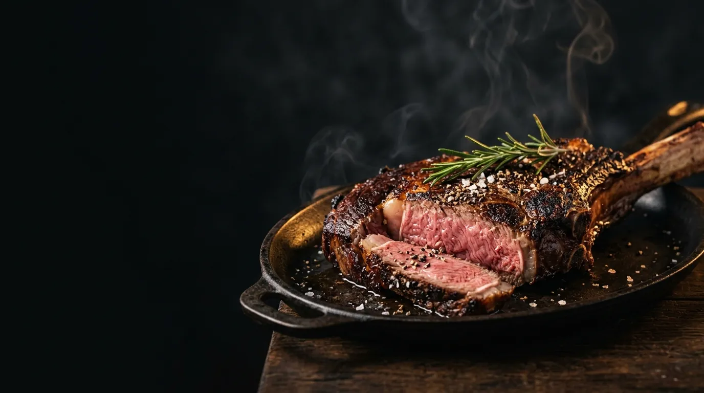
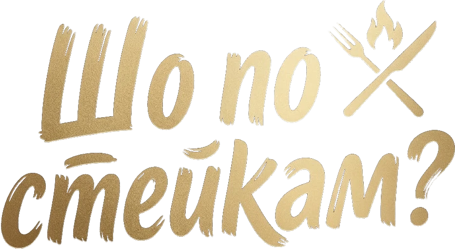
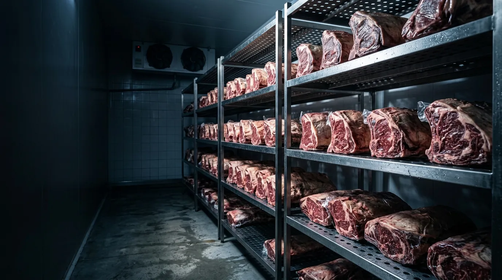
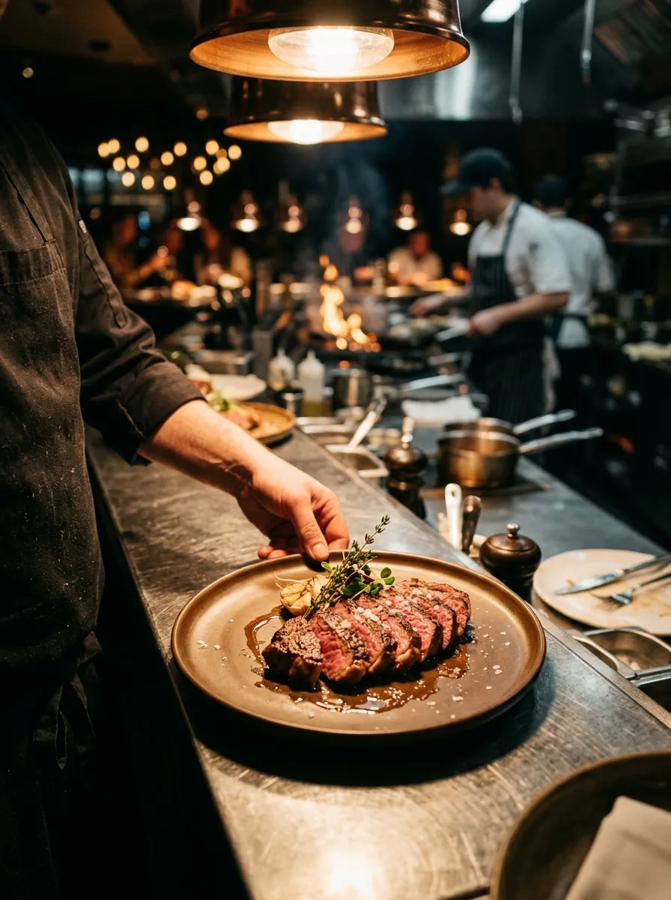

Самовивіз з цеху
м. Київ, вул. Сергія Данченка, 34. Час узгодимо телефоном — заберете стейки прямо з холоду.
Прокласти маршрут →

Витримана яловичина. Самовивіз у Києві або Нова Пошта по всій Україні.
Кодове слово Впиши в кошику „Шо по стейкам?“ — перша доставка Новою Поштою безкоштовно
Жодного стейка без витримки
Цех у Києві · термобокс з льодом
Мінімальне замовлення
Відповідаємо за кожен шматок
Ціна порції орієнтовна — точну суму назвемо після зважування.
Купив гарний шматок, засмажив як у відео — а він гумовий. Справа не в тобі.
Свіже — не означає смачне
М’ясо без витримки жорстке, скільки його не смаж.
У нас: кожен відруб 21 день відпочиває у вакуумі при 0…+2 °C. Волокна розм’якшуються самі — без маринадів і хімії.
Незрозуміло, що береш
На вітрині «стейк яловичий» — а що це за м’яз і як його готувати, ніхто не скаже.
У нас: назва відрубу, вага порції, на що він схожий і як його смажити — прямо в меню.
Рібай є, а далі — пусто
Піканью, топ блейд чи рамп у магазині не знайти.
У нас: 8 класичних і 6 альтернативних відрубів, бургерна котлета і маринований шашлик з вирізки — в одному місці.

Потягни повзунок — і подивись, що відбувається з м’ясом, поки воно чекає свого дня.
Відбір
Беремо охолоджені відруби з добрим мармуром і рівним жировим покривом, пакуємо у вакуум.
Охолоджена яловичина з добрим мармуром і рівним жировим покривом.
Вакуум, 0…+2 °C. Власні ферменти м’яса розм’якшують волокна, сік лишається всередині.
Порціонуємо під замовлення: самовивіз з цеху або Нова Пошта в термобоксі з льодом.
Шкали ніжності й смаку — ілюстрація процесу, а не лабораторний замір.
Готуємо камеру для сухої витримки — смак густіший, з горіховими нотами. Хочеш спробувати першим? Напиши нам.

Для ресторанів і кухонь
Шеф має готувати, а не шукати постачальника, у якого рібай щоразу інший.
або подзвоніть: 073 450 54 35
м. Київ, вул. Сергія Данченка, 34. Час узгодимо телефоном — заберете стейки прямо з холоду.
Прокласти маршрут →По всій Україні. Кожен стейк у вакуумі, усе замовлення — у термобоксі з льодом.
Коротко про витримку, доставку і те, як не зіпсувати гарний стейк.
Після розбирання відруби 21 день відпочивають у вакуумі при 0…+2 °C. Власні ферменти м’яса розм’якшують волокна: стейк стає ніжнішим, а смак — глибшим. Жодних добавок, лише час і холод.
Кожен стейк ріжемо вручну, тож вага трохи відрізняється. Ціна за кілограм фіксована, а точну суму менеджер назве після зважування — ще до оплати.
У нашому цеху: м. Київ, вул. Сергія Данченка, 34. Після оформлення зателефонуємо й домовимось про час — стейки чекатимуть у холоді.
Кожен стейк у вакуумі, усе замовлення — у термобоксі з льодом. Забери посилку в день прибуття і одразу поклади в холодильник.
У вакуумі в холодильнику при 0…+4 °C — до 5 днів. У морозилці — до 6 місяців; розморожуй повільно, у холодильнику за добу.
Це інші м’язи туші: топ блейд, піканья, рамп, фланк. Вони дешевші за рібай, а смак у багатьох яскравіший. Біля кожного в меню написано, на що він схожий.
Дістань стейк з холодильника за 30–40 хв, посоли, розігрій пательню або гриль до максимуму. 2–4 хв з кожного боку, потім 5 хв відпочинку. Термометр: 50 °C — rare, 55 °C — medium rare, 60 °C — medium.
Так. Ріжемо під вашу вагу порції, возимо за графіком, а для початку даємо пробну партію. Телефонуйте: 073 450 54 35.
Після оформлення менеджер зателефонує, уточнить вагу й час самовивозу чи відправки та назве точну суму і спосіб оплати.
Впиши «Шо по стейкам?» у кошику — перша доставка Новою Поштою буде безкоштовною. Самовивіз і так безкоштовний.
Про нас
Знайомо: хочеш на вихідних нормальний стейк, а в магазині — або сіре м’ясо без назви, або рібай за ціною ресторану і без жодних гарантій. Ми були тими самими людьми, які після кожної покупки гадали, чому знову не вийшло.
Тому зробили свій цех. Самі відбираємо відруби, самі витримуємо, самі ріжемо і самі відповідаємо на дзвінки. Ніяких посередників між холодильною камерою і вашою пательнею.
Наша назва — це питання, яке ставить кожен, хто любить м’ясо. А відповідь ми пакуємо у вакуум.
Збери кошик на сайті, подзвони або приїжджай у цех. Ресторанам — окремі умови.